y1_ess_y1,
y2_ess_y1 |
1-year est. sample size based on 1- and 2-year comparison
|
| pooled_ess |
1-year meta-ESS pooled from 1-, 2-, and 3-year comparisons |
| y1±, y2±,
y3± |
Sign (+ or -)
of change in the 1-, 2-, and 3-year comparison |
pooled_ΔΔ_sara_ρ,
pooled_ΔΔ_abc_ρ,
pooled_ΔΔ_inas_ρ |
Spearman correlation of change in SARA, ABC, INAS with
change in outcome, pooled from 1-, 2-, and 3-year comparisons |
| y2_ΔΔ_sara_pg_ρ |
2-year SARAp&g Spearman correlation |
hc_<0_r_rb,
<0_≥0<5_r_rb,
≥0<5_≥5_r_rb |
Cross-sectional effect sizes:
- HCs vs. patients before disease onset
- Patients before disease onset vs. up to 5 years into disease
- Patients up to 5 years into disease vs. more than 5 years
|
| agr |
Score of agreement in direction of the various effects |


 
